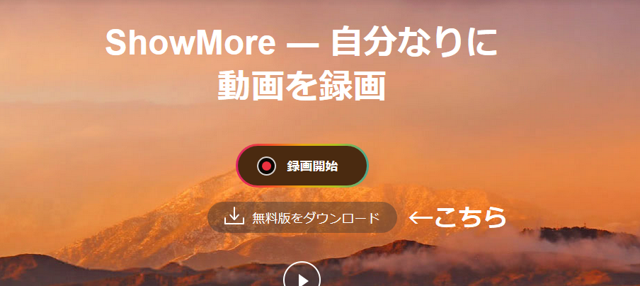

＜動画投稿の推奨プログラム＞
●当サイトでは
●動画共有サイト(YouTubeなど)に投稿してくれた方には、管理人にご連絡を
してくれた方から順に動画投稿者リストに追加いたします。
その際、自分のチャンネルやHPを当サイトで宣伝することもできます。
●初めての方でも大歓迎です。以下の無料ツールをご利用ください。
＜プログラムの流れ＞
＜録画の方法について＞
●録画ツールに規定はありません。初めての方はShowMoreをおすすめします。
●
●
●詳しいインストール・録画方法についてはこちら。
＜動画編集の方法について＞
＜投稿の際の注意点＞
●動画の形式は問いません。
●投稿者リストの追加基準に、
投稿してくれた時点で喜んで掲載させていただきます。
●ただし、以下の項目を禁止します。
○特定の人物・団体に対する誹謗中傷または過激な発言。
○ウイルスサイト・スパムサイトへの誘導
●投稿後は、私のTwitterにてご報告ください。動画の内容を確認後、
リストに追加いたします。